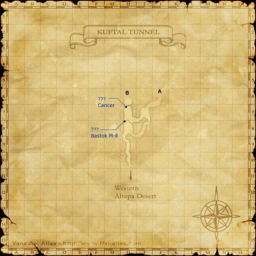
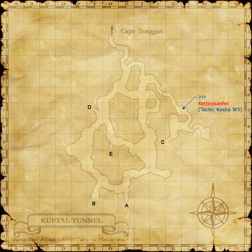
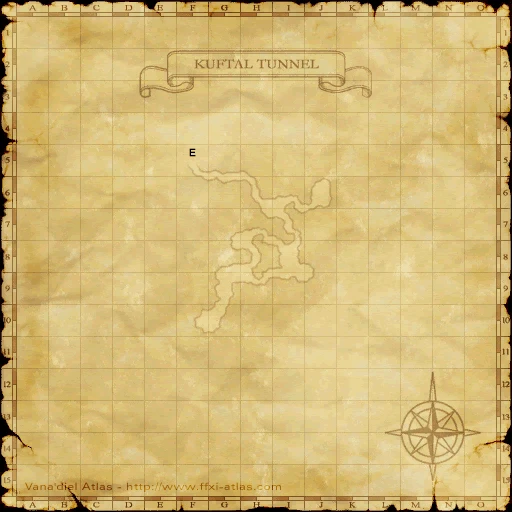

Before you begin
Be allied with Bastok, have Rank 8, and finish the preceding required story steps. Raise Rank Points if the mission is not offered.
Walkthrough
- Accept the mission and visit Drake Fang in Zeruhn Mines (H-6).
- Enter Kuftal Tunnel from Western Altepa Desert. Examine the upper ??? at (H-8) for the falling-wood message.
- Reach the lower room beneath it and inspect the second ??? to summon Dervo’s, Gizerl’s and Gordov’s Ghosts.
- Defeat the mission enemies and inspect the lower ??? for the Old Piece of Wood.
- Return to Drake Fang.
Important notes
- Every player needs the upper trigger. The route here does not depend on despawn tricks.
Locations and references
| Place / NPC | Location | Reference |
|---|---|---|
| Wood triggers | Kuftal Tunnel (H-8), upper and lower levels | Location reference |
Completion and reward
Rank 9; 80,000 gil
Area maps
Open a zone below, then select a map to enlarge it. Match the named floors and grid coordinates in the steps; these are reference area maps, not a live position tracker.
Zeruhn Mines


Kuftal Tunnel










Western Altepa Desert


References
HorizonXI Wiki: Bastok 8-2 · LandSandBoat mission definition
The route summary covers the original story. Other servers’ extra rewards, level-cap settings and Trust rules are not promises of Zenith behavior. Confirm battlefield entry conditions in game.
Additional level-75 reference
|
Walkthrough
- After getting the mission from the gate guard, talk to Drake Fang H-6 in Zeruhn Mines who gives you more information.
- In Kuftal Tunnel very close to the Western Altepa Desert entrance, there is a ??? @ H-8.
- Examine the ??? on the top of the cliff. The dialogue should end with it saying the piece of wood fell down.
- Sneak the person who will pop the mobs. That person will then pop the 3 NM ghosts by touching the ??? @ H-7 at the bottom of the cliff, in Cancer pop room:
- Pull Gordov's Ghost only and kill. Wait for the other two NMs to despawn before completely killing Gordov's Ghost!! If you do not wait for the other two NMs to despawn, respawn time is approx 5 mins.
- The person, that pops and pulls Gordov's Ghost, can zone any mobs that agro while pulling. The party has to grab Gordov's Ghost as he comes by. The puller only needs to be back before he is killed.
- It may be worth it to have someone go watch for when the other two NMs despawn. (It can be very easy to kill him too quickly)
- Have everyone check the ??? for a cutscene and a Key Item Old Piece of Wood. Checking the ??? will not respawn the NM ghosts no matter how much time has passed (leaving the zone means you will have to re-fight the NMs), so it's okay to raise any members who have died first.
- Talk to Drake Fang again for a long cut scene and to complete the mission.
- Not required: mini-cutscene with Gumbah and Iron Eater afterwards.
Game Description
- Mission Orders
- You are to investigate the Kuftal Tunnel which connects Zepwell Island with Cape Teriggan. Zeruhn Mines guard Drake Fang will provide you with further details.
Adapted from Eden Wiki: Enter the Talekeeper · Contributors and history · CC BY-SA 4.0. Revision 8769. Layout, links and optional background text adapted for Zenith.